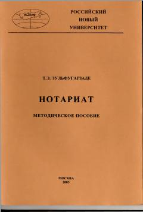

НМRossiya Federatsiyasida notariat faoliyatini o'rganish bo'yicha metodik qo'llanma.
Ushbu metodik qo'llanma Rossiya Federatsiyasida notariat faoliyatini huquqiy tartibga solish asoslarini yoritib beradi. Unda notarial harakatlarni amalga oshirish qoidalari, notariuslarning huquq va majburiyatlari hamda nazorat mexanizmlari batafsil bayon etilgan.